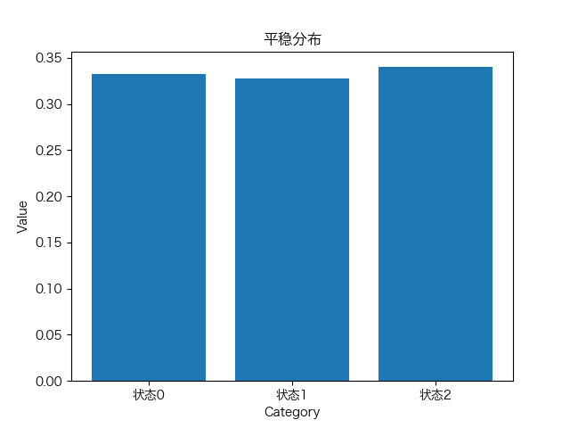

该链上任意2点均可互达，因此其常返性相同
考虑0时刻目标在位置0的状态(左边有−1，−2，⋯，右边有1，2，⋯)
当p=21时：
Pii(2)=C21p(1−p)Pii(4)=C42p2(1−p)2⋯Pii(2n)=C2nnpn(1−p)nlnPii(2n)由斯特林公式，ln(n!)LHSPii(2n)n=1∑+∞Pii(2n)=ln(2n!)−2ln(n!)+2nln(21)=21ln(2πn)+n(ln(n)−1)=21[ln(4πn)−ln((2πn)2)]+2nln2+2nln(21)=21ln(πn1)∼πn1=n=1∑+∞πn1=+∞
因此0状态是常返的，当p=21时
LHS4p(1−p)<1,LHS⟺Pii(2n)=21ln(πn1)+2nln2+nln(p(1−p))=21ln(πn1)+nln(4p(1−p))ln(4p(1−p))<0,limn→+∞nln(4p(1−p))=−∞→−∞→0,n=1∑+∞Pii(2n)<+∞
说明当p=21时，0状态是非常返的
(1)
从状态0出发经过k步未回到状态0的概率P(X>k)=0.5k
P(X≤k)=1−0.5k
在第k步首次返回的概率为fii(k)=P(X≤k)−P(X≤k−1)=0.5k
平均步数=k0.5k=2
fii=k=1∑+∞fii(k)=0.5+0.52+⋯=1
由定义知状态0是正常返的
(2)
对∀k∈N∗，Pii(k)>0
状态0是周期为1的
(3)
该链上任意2状态是互达的，因此都是正常返的
互达状态的周期相同，因此周期均为1
(1)
若i非常返，则从i出发，以概率1−fii>0回不到i成功逃离的概率为k=1∑+∞fiik−1(1−fii)=1(几何分布)若有限链均为非常返态，则所有状态都将被逃离(无法到达),这与状态总属于有限状态集矛盾
(2)
Markov链不可约⟺所有状态均可互达⟺所有状态的常返性相同，均为正常返
(1)
1、2为常返态，3、4为非常返态
1、2可互达，且这2个状态的次态也为1、2，状态4无法到达，状态3有21的概率逃离
(2)
状态1可以自返，周期为1，状态2与1互达，也为正常返且周期为1
(1)
假设对于状态有限的Markov链，存在零常返态i
考虑零常返态i的可达状态集A(i)=j:i→j，则A(i)中所有态均与i互达
且A(i)所有态均为零常返的
由零常返的性质，若j为非常返或零常返，则∀i∈S，都有limn→∞Pij(n)=0
固定i,取j遍历有限状态集中每一个状态，则j∈A(i)∑Pij(n)=0，这与A(i)是i的所有可达状态矛盾
(2)
不可约⟺所有状态可达⟺所有状态常返性相同，且至少有一个常返态
且状态有限的Markov链不存在零常返态，所以所有状态均为正常返
8、
βP=βPTβT=βT求解PT的特征向量和特征值，其中特征值为1对应的特征向量为(31 31 31)平稳分布即为(31 31 31)
9、
考虑题8中的Markov链
